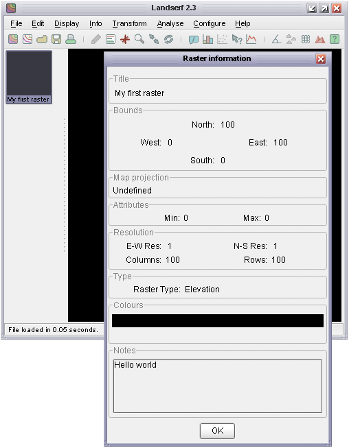

In order to take advantage of the several hundred classes that make up the LandSerf class libraries, you will first
need to identify their location in your Java development environment. The libraries are stored in two .jar
files in the directory in which you installed LandSerf. landserf230.jar contains LandSerf-specific classes
and utils230.jar contains a set of more general utility classes.
If you are compiling your own Java code from the command line, you will need to point to these two jar files by
using the -classpath option of javac. For example:
javac -classpath .;"c:Program Files\LandSerf\landserf230.jar";"c:Program Files\LandSerf\utils230.jar" myClass.java (Windows)
javac -classpath .:~/LandSerf/landserf230.jar:~/LandSerf/utils230.jar myClass.java (Linux)
javac -classpath .:/Applications/LandSerf/LandSerf.app/Contents/Resources/Java/landserf230.jar:/Applications/LandSerf/LandSerf.app/Contents/Resources/Java/utils230.jar myClass.java (MacOSX)
If you are using an IDE, you will need to make an equivalent link with the two jar files. For example, in Eclipse, create a new project
and select Properties->Java Build Path->Libraries and then click the Add External JARs... button.
In time honoured fashion, we will start by writting a simple 'hello world' program that will create a simple LandSerf Raster Map, add some metadata, and save it to disk. Consider the following code:
1 2 3 4 5 6 7 8 9 10 11 12 13 14 15 16 17 18 19 20 21 22 23 24 25 26 27 28 29 30 31 32 33 34 35 |
import jwo.landserf.structure.*; // For spatial object class. import jwo.landserf.process.io.*; // For file saving. // ********************************************************** /** Creates a simple raster map and with metadata. * @author Jo Wood * @version 1.1, 15th October, 2007 */ // ********************************************************** public class HelloWorld { //------------------ Starter Method ----------------- public static void main(String[] args) { new HelloWorld(); } //------------------- Constructor ------------------- public HelloWorld() { // Create a blank raster of 100 x 100 cells. RasterMap raster = new RasterMap(100,100); // Add some simple metadata Header header = new Header("My first raster"); header.setNotes("Hello world"); raster.setHeader(header); raster.setDefaultColours(); // Write new raster to file. LandSerfIO.write(raster,"hello.srf"); } } |
Most of the spatial data structures such as raster maps, vector maps, TINs etc. are represented by classes in the jwo.landserf.structure
package. Therefore to use them, this package is imported in line 1 of the code. Since this first example will save a raster map as
a file, we also need to import the jwo.landserf.process.io package that contains most of the file import/export functionality.
The constructor (line 24) creates an empty raster map containing 100 rows and 100 columns of data. The RasterMap API documentation provides details of other ways to construct raster maps.
The next four lines of code (27-30) create some simple metadata to attach to the raster map. Most metadata are stored in the jwo.landserf.structure.Header class. This class, which is attached to all SpatialObjects, allows a title, author, copyright information and supplementary notes to be associated with the raster. In this example, just the title (set via its constructor) and notes are set. Finally, a default ColourTable is attached to the raster map.
The last line of the HelloWorld constructor (line 33) saves the raster we have just created to disk with the name hello.srf.
Most operations for reading and writing LandSerf files are represented as static methods in the classes in the
jwo.landserf.process.io package. Methods for reading and writing
in the default LandSerf file format are found in the LandSerfIO class
in that package.
To run a compiled class simply call the java interpreter making sure the relevant jar files are linked to your code. This may be achieved
directly from with your IDE, by setting your machine's CLASSPATH variable, or by explicitly linking the jar files from the command line:
java -classpath .;"c:Program Files\LandSerf\landserf230.jar" HelloWorld (Windows)
java -classpath .:~/LandSerf/landserf230.jar HelloWorld (Linux)
java -classpath .:/Applications/LandSerf/LandSerf.app/Contents/Resources/Java/landserf230.jar HelloWorld (MacOSX)
The command line options can be used to create a simple .bat (Windows) or .sh (Unix/Linux/MacOSX)
file that will allow your program to be conveniently run without an IDE.
You can test the output of the program by starting LandSerf and opening the file hello.srf. Selecting Info->Summary Info
should produce output similar to the figure below.

Metadata from simple raster displayed in LandSerf.
HelloWorld project in your favourite Java IDE (or use the command line if you prefer).
Create a new class HelloWorld and copy the code above into it.
landserf230.jar file, compile and run the class. Check that it has behaved
as expected by starting LandSerf and loading the new raster file hello.srf.